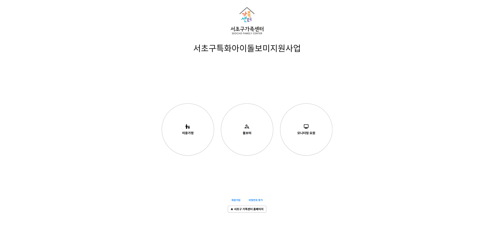
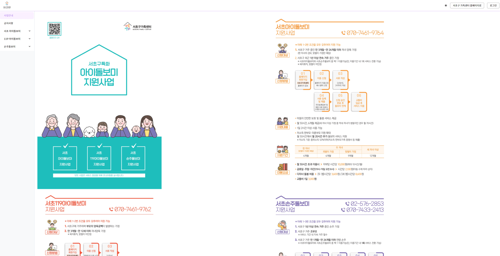
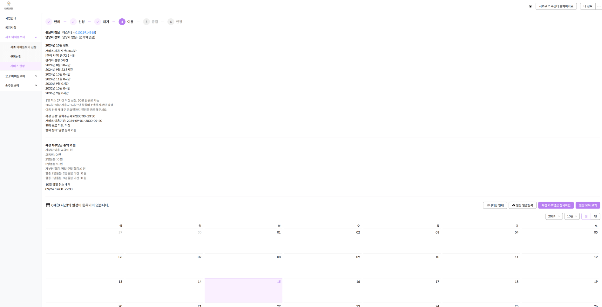
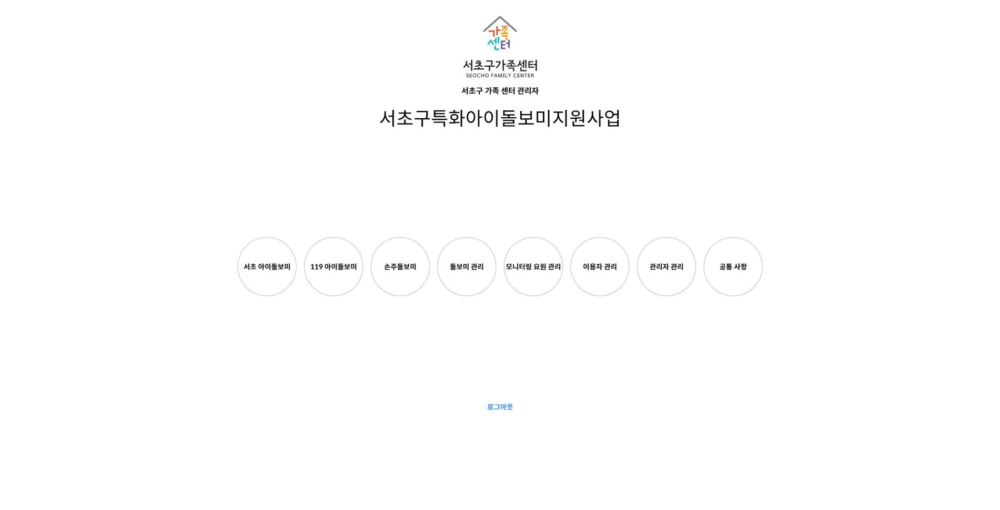

← Project Archive
Project 08 · 2023—2024
서초구가족센터
아이돌보미 신청·일정·근태·정산 흐름을 통합한 가족센터 서비스 관리 시스템입니다.
- Role
- 프론트엔드 개발자
- Period
- 2023.10 — 2024.05
- Stack
- React
- Scope
- 돌봄 신청 · 일정 · 근태 · 정산
01 / Overview
프로젝트 소개
서초구·119·손주돌보미 서비스의 신청과 일정 관리부터 운영자의 근태·정산 업무까지 하나의 흐름으로 관리할 수 있도록 구축한 서비스입니다.
02 / Features
주요 기능
- 돌봄 서비스 신청과 요청 관리
- 이용자·돌보미 일정 확인
- 근태와 정산을 포함한 관리자 운영 기능
- 로그인과 사용자 상태 관리
- 큰 글씨·아이콘·버튼을 적용한 직관적인 화면
03 / Technology
기술 스택 및 프로젝트 화면
- React 기반 사용자·관리자 화면



